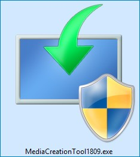
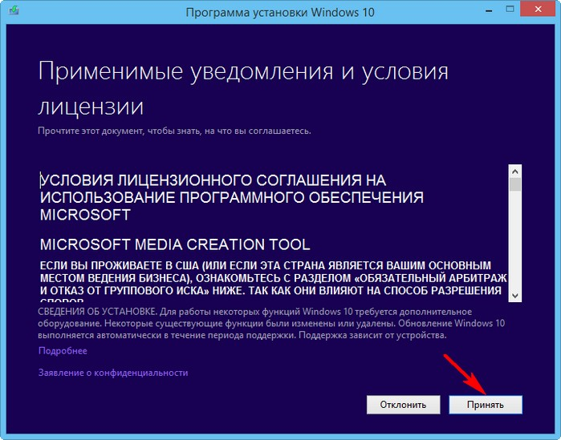
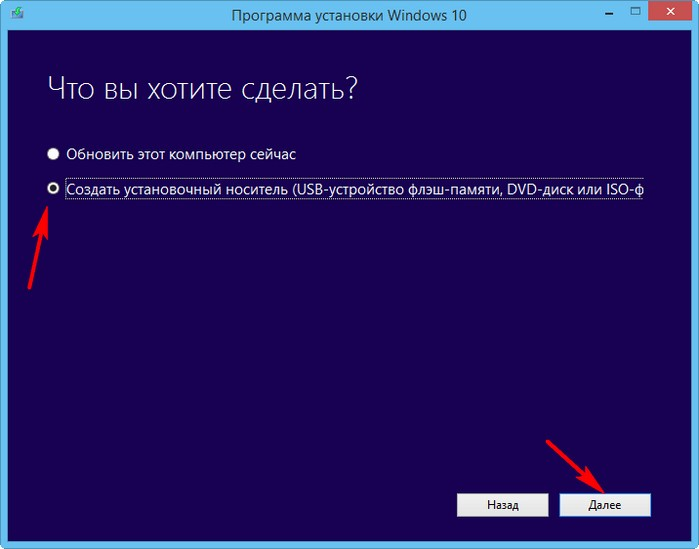
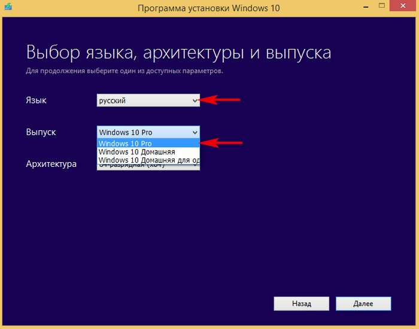
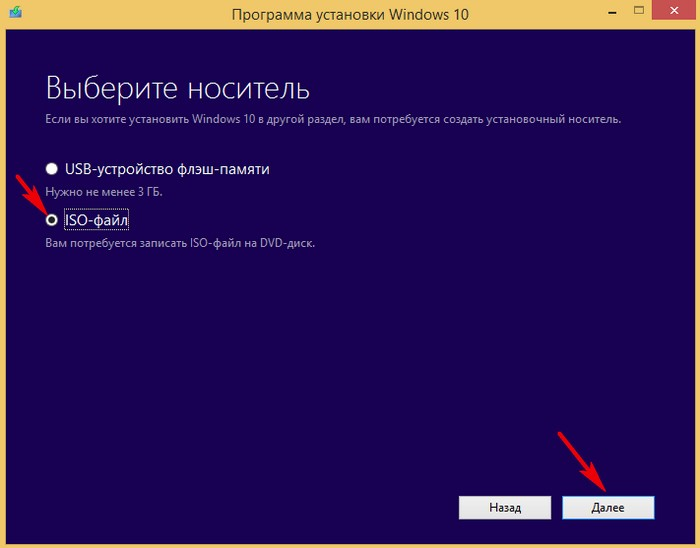
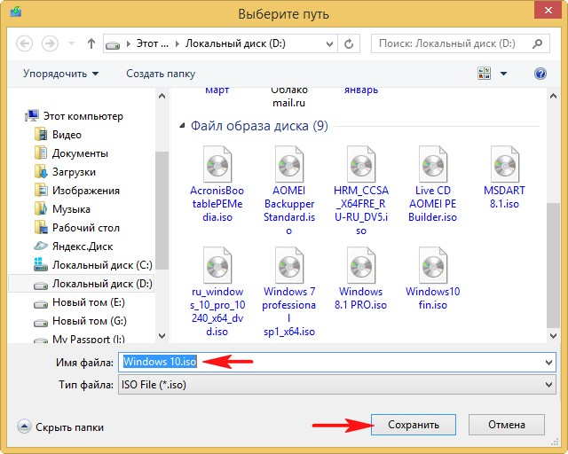
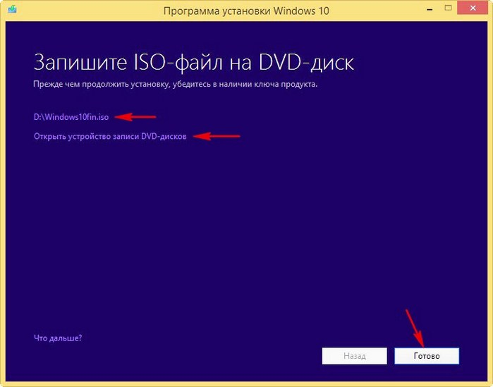

Как скачать Windows 10
Нам на компьютер скачивается специальный инструмент MediaCreationTool1809, с помощью которого можно скачать ISO-образ Windows 10, а также обновить нашу действующую операционную систему до новоиспечённой Windows 10.

Принимаем лицензионное соглашение.

Если мы хотим обновить работающую у вас операционную систему до Windows 10, то отметьте пункт Обновить этот компьютер сейчас (предлагаю сделать это в следующей статье).


Выбираем Язык, Выпуск и Архитектуру (64 бит или 32 бит) Windows 10.

Если хотим создать установочную флешку, то подсоединяем флешку к компьютеру и отмечаем пункт USB-устройство флеш-памяти.


Начнётся процесс скачивания Windows 10 скорость которого напрямую зависит от скорости вашего интернета.
В заключительном окне мастера показано, где находится скачанный образ системы.
Также мы можем сразу прожечь ISO-образ Windows 10 на DVD-диск.
Готово.

Вот так просто скачать Windows 10!
Читайте в следующей статье, как установить Windows 10.
Если вам не удалось скачать Windows 10 по этой статье, то используйте эту информацию.